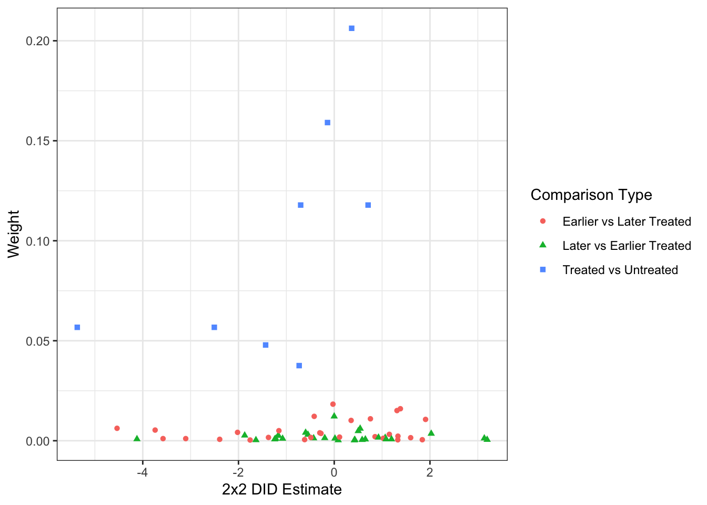
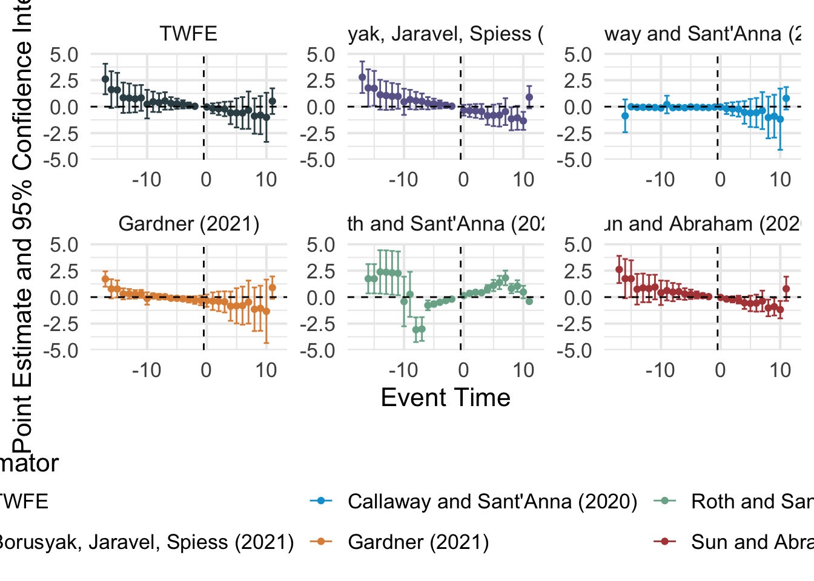
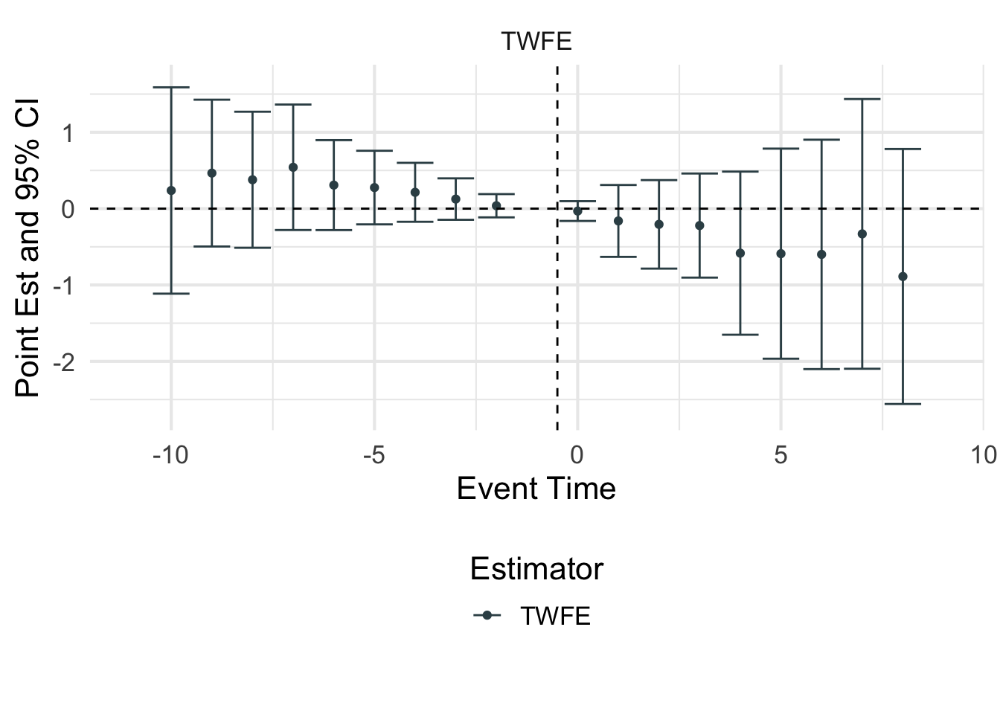
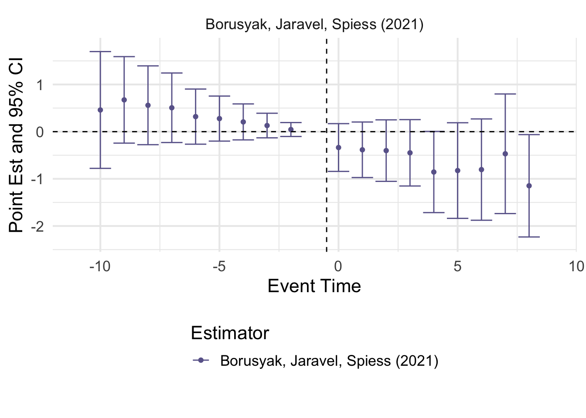
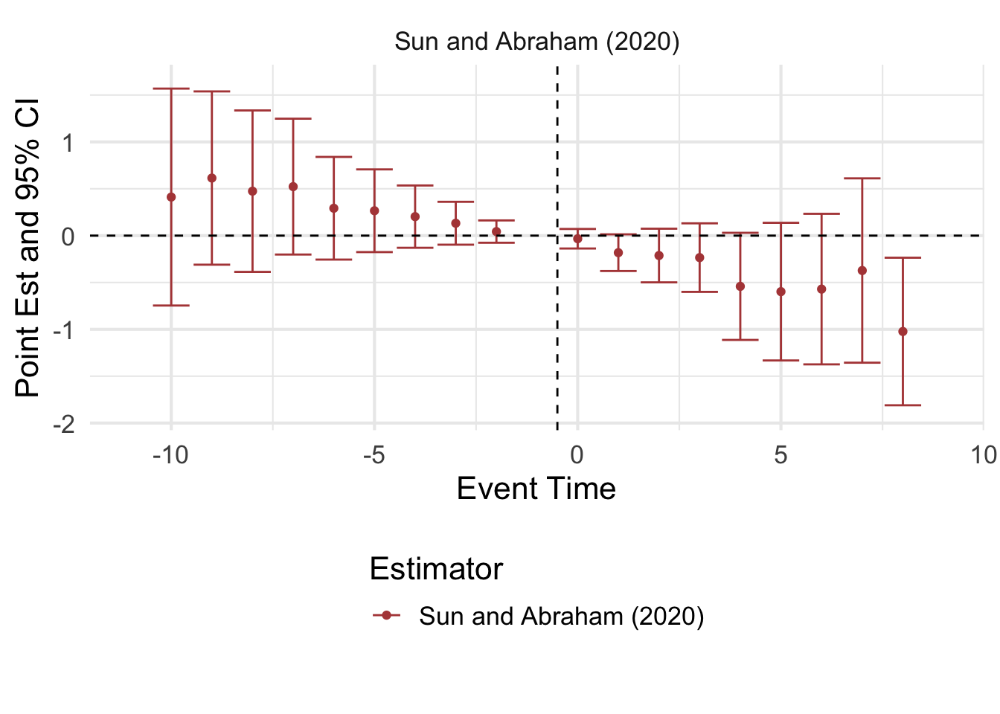
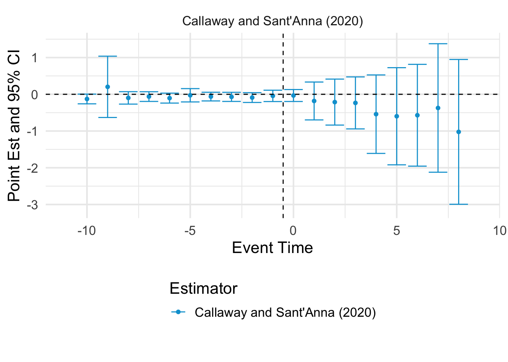
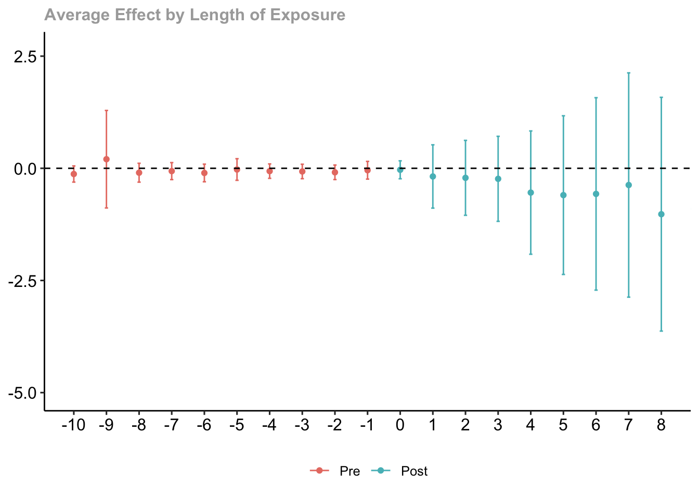
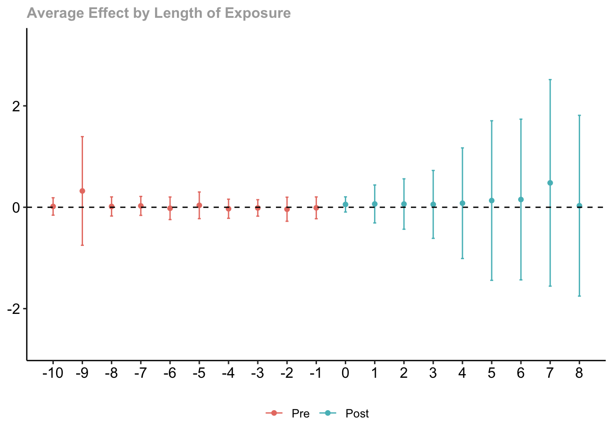

load(file="../data/mandate.Rda")Staggered Adoption DID Analysis: COVID-19 Vaccine Mandates
Setting and Data
The concept of this analysis is based on that in Rains and Richards (2024). The authors seek to understand the effect of COVID-19 vaccine mandates for state employees, which were implemented in 20 U.S. states, beginning on different dates in August–October 2021 (Ballotpedia). The vaccination data used are from the CDC’s COVID Vaccination Trends data set. Note that the data might vary somewhat from that in the Rains and Richards (2024) replication files.
The goal of the analysis is to test the hypothesis that the state mandates increased either the number of first vaccinations in the state or the proportion of the state’s adult population that was fully vaccinated. Although not used by Rains and Richards (2024), we use non-mandate states as controls.
The data are available in the mandate.Rda file. Vax_weekly contains the full data set, by state and summarized by MMWR week, for January 2021 through May 2023, for two variables: SCP has the proportion of the adult population that has a complete vaccination series and D1P has the proportion of the adult population with at least one dose. The weekly increments are in the _diff variables. Information on the mandate for each start are in the Mandate_Start, ever_mandate, and mandate variables, and lead/lag information by week is in Wks_mandate and LeadLag.
First, load the data into R.
Libraries
Again, we will use tidyverse and knitr for general coding and lme4 for clustered TWFE models. Roth et al. (2023) has a summary table with R packages that implement advanced DID methods. We will use four of them:
bacondecompimplements the decomposition from Goodman-Bacon (2021);did2s, described in Butts and Gardner (2022), implements the two-stage DID approach of Gardner (2021), as well as many other proposed methods including the dynamic specification of Borusyak et al. (2024), the IW estimator of Sun and Abraham (2021), and the aggregated approach of Callaway and Sant’Anna (2021);did, described in Callaway and Sant’Anna (2021) gives more options for the CS approaches; andDIDmultiplegtimplements the first-difference approach of de Chaisemartin and d’Haultfoeuille (2020) (if you’re on a Mac, you may need to install Xcode from the App Store or XQuartz first and re-start R). Versions of this approach that can handle a wider array of settings, laid out in de Chaisemartin and d’Haultfoeuille (2023) and de Chaisemartin and d’Haultfoeiulle (2024), along with sped-up analytic standard errors are implemented in theDIDmultiplegtDYN, which requires Java for installation.
We now load the required libraries.
## If you have not installed these packages before,
## run the following line:
# install.packages(c("bacondecomp","did2s","did","DIDmultiplegt"))
## Either way, load the libraries:
library(tidyverse)
library(knitr)
library(lme4)
library(bacondecomp)
library(did2s)
library(did)
library(DIDmultiplegt)Graphical Exploration
We begin by plotting the time series for visual inspection. First, we plot a timeline of the mandate times.
## Plot time series of mandates themselves:
#| fig-cap: "Plot of state employee vaccination mandate timings, U.S. states, June 2021–February 2022"
#| fig-alt: "A bar plot with bars for each state over the time range specified, with twenty states switching from red to blue sometime between August 2021 and October 2021, and the rest remaining red throughout."
ggplot(data=Vax_weekly,
mapping=aes(x=End_Date,y=State, fill=mandate)) +
geom_tile(width=8) +
scale_x_date(name="Date", date_breaks="4 weeks", expand=c(0,0),
limits=c(as.Date("2021-06-05"),as.Date("2022-03-05")),
date_labels="%m/%d/%y") +
theme_bw() + guides(fill="none")We can then plot the time series of the outcomes by state, noting which states implement a mandate and when.
## Get lists of the states in the data and the states with a mandate at some point
states <- unique(Vax_weekly %>% pull(State))
mandate_states <- unique(Vax_weekly %>%
dplyr::filter(mandate) %>% pull(State))## Plot time series of first-dose proportion by state:
#| fig-cap: "Plot of the proportion of U.S. adults with at least one COVID-19 vaccine dose, by state and state vaccine mandate status, June 2021–February 2022"
#| fig-alt: "A line plot with lines for each state for dates from June 2021 to February 2022, and first-dose percentages generally increasing from a range around 45–80 at the beginning to a range around 70–90 at the end."
ggplot() +
geom_line(data=Vax_weekly %>%
dplyr::filter(!(State %in% mandate_states)),
mapping=aes(x=End_Date, y=D1P, group=State),
color="grey50", linetype="dashed") +
geom_line(data=Vax_weekly %>%
dplyr::filter(State %in% mandate_states),
mapping=aes(x=End_Date, y=D1P, group=State,
color=mandate),
linetype="solid") +
scale_color_manual(name="Mandate",
breaks=c(TRUE,FALSE),
values=c("blue","grey50"),
labels=c("Post-Mandate","Pre-/No Mandate")) +
scale_y_continuous(name="First-Dose Percentage",
limits=c(0,100), expand=c(0,0)) +
scale_x_date(name="Date", date_breaks="6 weeks",
expand=c(0,0),
limits=c(as.Date("2021-06-05"),as.Date("2022-03-05")),
date_labels="%m/%d/%y") +
theme_bw()
Several states appear to have implausible declines or rates at 100. We can identify data errors that explain some of these peculiarities, e.g. New Hampshire, Pennsylvania, and Washington. We will exclude these three states from the analysis, but a full analysis should examine the other states as well. We will also limit the analysis weeks to 2021, MMWR weeks 25–42 to both be more focused on timing around the implementation of mandates and exclude some data inconsistencies found at other times.
## Exclude New Hampshire, Pennsylvania, Washington:
Vax_adj <- Vax_weekly %>%
dplyr::filter(!(State %in% c("NH","PA","WA")))
## Select weeks for analysis:
Yr_Wk_Sel <- paste0("2021_",(25:42))We re-plot on this adjusted group of states and weeks.
## Plot time series of first-dose proportion by state in smaller time window:
#| fig-cap: "Plot of the proportion of U.S. adults with at least one COVID-19 vaccine dose, by state and state vaccine mandate status, July 2021–October 2021"
#| fig-alt: "A line plot with lines for each state for dates from July 2021 to October 2021, and first-dose percentages generally increasing from a range around 45–85 at the beginning to a range around 60–90 at the end."
ggplot() +
geom_line(data=Vax_adj %>%
dplyr::filter(!(State %in% mandate_states),
Yr_Wk %in% Yr_Wk_Sel),
mapping=aes(x=End_Date, y=D1P, group=State),
color="grey50", linetype="dashed") +
geom_line(data=Vax_adj %>%
dplyr::filter(State %in% mandate_states,
Yr_Wk %in% Yr_Wk_Sel),
mapping=aes(x=End_Date, y=D1P, group=State,
color=mandate),
linetype="solid") +
scale_color_manual(name="Mandate",
breaks=c(TRUE,FALSE),
values=c("blue","grey50"),
labels=c("Post-Mandate","Pre-/No Mandate")) +
scale_y_continuous(name="Full Vaccination Percentage",
limits=c(0,100), expand=c(0,0)) +
scale_x_date(name="Date", date_breaks="3 weeks", expand=c(0,0),
limits=c(as.Date("2021-07-03"),as.Date("2021-10-24")),
date_labels="%m/%d/%y") +
theme_bw()
Similar plotting and analyses could be done on the complete series percentage by replacing D1P in the above code by SCP.
Discussion Questions
Is one outcome (first-dose vs. full vaccination percentage) better suited to answering the question of interest than the other? Which is more likely to have a noticeable effect?
Does parallel trends seem like a reasonable assumption here? What might cause non-parallel trends?
Is checking parallel pre-trends a good justification for parallel trends post-intervention here? What might change the relationship between trends over time?
What forms of effect heterogeneity may be present in this staggered adoption setting?
TWFE Models
First, we fit TWFE models (using lmer to get clustered confidence intervals), the so-called “static” specification. We fit it once with just the fixed effects (no covariates), once adding D1P_25 as a covariate (not time-varying) and once adding D1P_prior as a covariate (time-varying).
## Fit TWFE model with no covariates:
TWFE_D1P <- lmer(D1P~factor(MMWR_week)+State+mandate+(1|State),
data=Vax_adj %>%
dplyr::filter(Yr_Wk %in% Yr_Wk_Sel))
## Get 95% CI:
TWFE_D1P_CI <- confint(TWFE_D1P, parm="mandateTRUE", level=0.95)
## Fit TWFE model with week 25 as covariate:
TWFE_D1P_ctrl1 <- lmer(D1P~D1P_25+factor(MMWR_week)+State+
mandate+(1|State),
data=Vax_adj %>%
dplyr::filter(Yr_Wk %in% Yr_Wk_Sel))
TWFE_D1P_ctrl1_CI <- confint(TWFE_D1P_ctrl1,
parm="mandateTRUE", level=0.95)
## Fit TWFE model with prior-week as covariate:
TWFE_D1P_ctrl2 <- lmer(D1P~D1P_prior+factor(MMWR_week)+State+
mandate+(1|State),
data=Vax_adj %>%
dplyr::filter(Yr_Wk %in% Yr_Wk_Sel))
TWFE_D1P_ctrl2_CI <- confint(TWFE_D1P_ctrl2,
parm="mandateTRUE", level=0.95)
## Summarize results from the two models:
TWFE_results <- tibble(Model=c("Fixed Effects Only",
"Fixed Effects + Week 25 Value",
"Fixed Effects + Prior Week Value"),
Estimate=format(c(summary(TWFE_D1P)$coefficients["mandateTRUE","Estimate"],
summary(TWFE_D1P_ctrl1)$coefficients["mandateTRUE","Estimate"],
summary(TWFE_D1P_ctrl2)$coefficients["mandateTRUE","Estimate"]), digits=3, nsmall=3),
`95% CI`=c(paste(format(TWFE_D1P_CI["mandateTRUE",], digits=3, nsmall=3), collapse=", "),
paste(format(TWFE_D1P_ctrl1_CI["mandateTRUE",], digits=3, nsmall=3), collapse=", "),
paste(format(TWFE_D1P_ctrl2_CI["mandateTRUE",], digits=3, nsmall=3), collapse=", ")))
## Print the formatted table:
knitr::kable(TWFE_results,
caption="Table 1. Results from TWFE models on first-dose percentage.")| Model | Estimate | 95% CI |
|---|---|---|
| Fixed Effects Only | -0.4832 | -0.798, -0.168 |
| Fixed Effects + Week 25 Value | -0.4832 | -0.798, -0.168 |
| Fixed Effects + Prior Week Value | -0.0121 | -0.0899, 0.0657 |
Note that the static covariate does not affect the results, as there are already fixed effects included for each state. The two different models (no covariates vs. time-varying covariate) give fairly different results, with large confidence intervals, leading to no clear conclusion. The estimates are hard to interpret as well given the changing circumstances of the states involved.
Goodman-Bacon Decomposition
We can conduct the Goodman-Bacon decomposition of the TWFE model to identify the weights given to different comparisons.
## Conduct the decomposition and print summary:
bacon <- bacon(D1P~mandate,
data=Vax_adj %>%
dplyr::filter(Yr_Wk %in% Yr_Wk_Sel),
id_var="State",
time_var="MMWR_week") type weight avg_est
1 Earlier vs Later Treated 0.14186 0.03461
2 Later vs Earlier Treated 0.05819 0.01646
3 Treated vs Untreated 0.79995 -0.61141## Full decomposition:
# bacon## Plot decomposition results:
#| fig-cap: "Goodman-Bacon decomposition plot for TWFE model with no covariates"
#| fig-alt: "Scatter plot of 2x2 DID weight vs estimate with three types of points: Earlier vs Later Treated, with estimate values from -4.5 to 2 and weights from 0 to 0.025; Later vs Earlier Treated, with estimate values from -4 to 3 and weights from 0 to 0.02; and Treated vs Untreated, with estimate values from -5.5 to 1 and weights from 0.04 to 0.21."
ggplot(data=bacon,
mapping=aes(x=estimate,y=weight,
shape=type,color=type)) +
geom_point() + theme_bw() +
labs(x="2x2 DID Estimate", y="Weight",
shape="Comparison Type",
color="Comparison Type")
The decomposition indicates that the vast majority of the weight is on Treated vs Untreated comparisons (because of the large number of untreated units). One particular observation has a large negative estimate driving the overall estimate.
We can also get the overall weights associated with each timing group, by taking their total weight when used as a treated group minus their total weight when used as a control group.
## Get total weight as a treated group for all comparisons:
Ov_Wt <- bacon %>%
group_by(treated) %>%
dplyr::summarize(PosWeight=sum(weight)) %>%
rename(`Treatment Time (Week)`=treated) %>%
ungroup() %>%
## Add a column with total weight as treated group for only
# timing comparisons
left_join(bacon %>% dplyr::filter(untreated != 99999) %>%
group_by(treated) %>%
dplyr::summarize(PosWeightTiming=sum(weight)),
by=join_by(`Treatment Time (Week)`==treated)) %>%
## Add a column with total weight as control group:
left_join(bacon %>% group_by(untreated) %>%
dplyr::summarize(NegWeight=sum(weight)),
by=join_by(`Treatment Time (Week)`==untreated)) %>%
## Subtract to get overall weight
mutate(Weight=PosWeight-NegWeight,
WeightTiming=PosWeightTiming-NegWeight) %>%
## Pivot longer for plotting:
pivot_longer(cols=starts_with("Weight"),
names_to="Type", values_to="Weight")## Plot decomposition results:
#| fig-cap: "Goodman-Bacon decomposition plot of overall weights on each timing group for TWFE model with no covariates. Black triangles indicate weights calculated on all comparisons, gray circles indicate weights calculated on timing-only comparisons."
#| fig-alt: "Scatter plot of weight vs. treatment time for each timing group. The black triangle values are positive, between 0.05 and 0.20, for all treatment weeks from 31 to 39 (with no points for 34, 37, 40, or 41). The value is around -0.02 for week 42. The gray circle values are lower, around 0 to 0.02 for weeks 31 to 39, slightly negative in week 39 and around -0.05 in week 42."
ggplot(data=Ov_Wt,
mapping=aes(x=`Treatment Time (Week)`,y=Weight,
shape=Type, color=Type)) +
geom_point(size=2.5) +
scale_x_continuous(limits=c(30,42),breaks=seq(30,42,by=2)) +
scale_shape_manual(breaks=c("Weight","WeightTiming"),
labels=c("All Comparisons","Timing-Only"),
values=c("triangle","circle")) +
scale_color_manual(breaks=c("Weight","WeightTiming"),
labels=c("All Comparisons","Timing-Only"),
values=c("black","grey50")) +
theme_bw()
The final switching group receives a negative overall weight, as it is used as a control group for the earlier-switching groups. Because there are so many control states compared to treated states, however, other timing groups do not get negative total weights. This does not mean that none of their (potentially heterogeneous) effects are given a negative weight in the estimand however.
Dynamic Specification and Alternative Estimators
Data Prep
Many of the following functions require two additional variables: a first-treated period variable that is constant for each unit (determines the group/cohort and treatment indicator), and, in some cases a unique numeric or factor ID for the unit. We create those as First_Week and StateID, respectively. For never-treated units, event_study allows either a 0 or NA for the first-treated period, while the did package requires a 0.
Vax_prep <- Vax_adj %>% dplyr::filter(Yr_Wk %in% Yr_Wk_Sel) %>%
left_join(Vax_adj %>% dplyr::filter(LeadLag==0) %>%
dplyr::select(State,MMWR_week) %>%
rename(First_Week=MMWR_week),
by=join_by(State)) %>%
dplyr::mutate(First_Week=replace_na(First_Week, 0)) %>%
left_join(tibble(State=unique(Vax_adj %>% pull(State))) %>%
arrange(State) %>%
mutate(StateID=1:length(unique(Vax_adj %>% pull(State)))),
by=join_by(State))Multi-Method Quick Fits
The event_study function in the did2s package implements many proposed DID/staggered adoption methods. These can be chosen using the estimator option, or all can be fit by setting estimator="all".
## Run event_study function with estimator="all":
ES <- event_study(data=Vax_prep,
yname="D1P",
idname="StateID",
gname="First_Week",
tname="MMWR_week",
estimator="all")
## List all results:
# ES
## Pick out a specific method:
# ES %>% dplyr::filter(estimator=="Borusyak, Jaravel, Spiess (2021)")## Plot the results of the various estimators:
#| fig-cap: "Event-study results from various staggered adoption methods on the effect of state employee COVID-19 vaccine mandates, event times from -16 to 12."
#| fig-alt: "Six event-study plots showing effect estimates and 95% confidence intervals at each lead/lag time from -16 to 12. The plots are labelled: TWFE, Borusyak, Jaravel, Spiess (2021), Callway and Sant'Anna (2020), Gardner (2021), Roth and Sant'Anna (2021), and Sun and Abraham (2020)."
plot_event_study(ES)
For easier inspection, particular estimators can be plotted alone, and the lead/lag times to show can be specified.
## Plot the results for just the dynamic estimator:
#| fig-cap: "Event-study results using the dynamic specification of the TWFE model on the effect of state employee COVID-19 vaccine mandates, event times from -10 to 8."
#| fig-alt: "A single event-study plot showing effect estimates and 95% confidence intervals at each lead/lag time from -10 to 8. The event times less than 0 tend to have positive estimates with CIs crossing or nearly crossing 0, and those greater than 0 tend to have negative estimates with CIs crossing or nearly crossing 0. The CIs are narrowest near event time 0, and the estimates are closest to 0 there."
plot_event_study(ES %>%
dplyr::filter(estimator=="TWFE"),
horizon=c(-10,8)) +
labs(y="Point Est and 95% CI")
This is the basic dynamic estimator that arises from including leads/lags (except -1, the last pre-treatment period) in the TWFE model. You can see some evidence for heterogeneous treatment effects: the effect seems to grow with time since treatment. There is also evidence for non-parallel trends: the lead times consistently have positive point estimates, indicating the treated states were growing faster than untreated states prior to treatment. These are decreasing, indicating that this effect was disappearing, or possibly changing. Under heterogeneous treatment effects (either calendar time-varying treatment effects or different dynamic effects by adoption cohorts), there can still be cross-lag contamination and negative weights. This even means that apparent pre-trends may not be reliable (i.e., non-zero lead estimates can result from heterogeneous dynamic effects rather than a violation of parallel trends).
## Plot the results for just the dynamic estimator:
#| fig-cap: "Event-study results using the dynamic specification described in Borusyak et al. (2024) on the effect of state employee COVID-19 vaccine mandates, event times from -10 to 8."
#| fig-alt: "A single event-study plot showing effect estimates and 95% confidence intervals at each lead/lag time from -10 to 8. The event times less than 0 tend to have positive estimates with CIs crossing or nearly crossing 0, and those greater than 0 tend to have negative estimates with CIs crossing or nearly crossing 0. The CIs are narrowest near event time 0, and the estimates are closest to 0 there."
plot_event_study(ES %>%
dplyr::filter(estimator=="Borusyak, Jaravel, Spiess (2021)"),
horizon=c(-10,8)) +
labs(y="Point Est and 95% CI")
The BJS estimator is a two-stage estimator that first fits a model for the unit and time fixed effects on the untreated unit-periods only. Then it removes these effects from the treated unit-periods and regresses the residuals on the leads/lags. It thus requires a strict parallel trends assumption (by using all prior periods to fit the counterfactual) and weights the group-time ATTs implicitly through the final OLS regression.
In this case, the results are fairly similar to the TWFE event study specification.
## Plot the results for just the Sun and Abraham estimator:
#| fig-cap: "Event-study results using the estimator from Sun and Abraham (2020) on the effect of state employee COVID-19 vaccine mandates, event times from -10 to 8."
#| fig-alt: "A single event-study plot showing effect estimates and 95% confidence intervals at each lead/lag time from -10 to 8. The event times less than 0 tend to have positive estimates with CIs crossing or nearly crossing 0, and those greater than 0 tend to have negative estimates with CIs crossing or nearly crossing 0. The CIs are narrowest near event time 0, and the estimates are closest to 0 there."
plot_event_study(ES %>%
dplyr::filter(estimator=="Sun and Abraham (2020)"),
horizon=c(-10,8)) +
labs(y="Point Est and 95% CI")
The Sun and Abraham estimator fits a dynamic regression with leads/lags interacted with each timing group, leaving out the never- or last-treated group. All comparisons are made to the final pre-treatment week. These are then weighted for each lead/lag by the share of units/observations at each lead/lag that falls into that timing group. This works well for unit-level homogeneity and ensures no negative weights even under different dynamic trends. It is also a strong restriction, not using any information from not-yet-treated groups (limiting efficiency in the bias-variance tradeoff); and does not permit covariates.
## Plot the results for just the Callaway abnd Sant'Anna estimator:
#| fig-cap: "Event-study results using the estimator from Callaway and Sant'Anna (2020) on the effect of state employee COVID-19 vaccine mandates, event times from -10 to 8."
#| fig-alt: "A single event-study plot showing effect estimates and 95% confidence intervals at each lead/lag time from -10 to 8. The event times less than 0 tend to have estimates near 0 with (mostly) fairly narrow CIs, and those greater than 0 tend to have negative estimates with wide CIs crossing or nearly crossing 0. The CIs are narrowest near event time 0, and the estimates are closest to 0 there."
plot_event_study(ES %>%
dplyr::filter(estimator=="Callaway and Sant'Anna (2020)"),
horizon=c(-10,8)) +
labs(y="Point Est and 95% CI")
This approach gives noticeably different results from the others for the lead periods, although the post-treatment effect estimates are pretty similar. There are two main differences in the fitting compared to the Sun and Abraham approach: (1) not-yet-treated units are also used as controls here; and (2) pre-treatment lead estimates are estimated compared to the prior period, rather than to the last pre-treatment period. In fact, the leads estimated by SA are similar to the accumulated leads estimated by CS (they will be more different if there are fewer never-treated units). This makes any divergence from parallel pre-trends, including anticipation, appear starker in the SA results.
In all cases, note how the standard errors tend to increase further from 0, as there are fewer treated (and in some cases, control) units available to make those estimates. Aggregating to a single parameter depends on the desired interpretation and variance properties.
Explicitly Weighted CS Approach
We can get more detail on the CS approach using the functions in the did package:
The att_gt function estimates all group-time ATTs:
attgt <- att_gt(yname="D1P", tname="MMWR_week",
gname="First_Week", idname="StateID",
data=Vax_prep,
control_group="nevertreated")
# attgtThen, these group-time ATTs can be aggregated in different ways using the aggte function:
agg.simple <- aggte(attgt, type="simple")
summary(agg.simple)
Call:
aggte(MP = attgt, type = "simple")
Reference: Callaway, Brantly and Pedro H.C. Sant'Anna. "Difference-in-Differences with Multiple Time Periods." Journal of Econometrics, Vol. 225, No. 2, pp. 200-230, 2021. <https://doi.org/10.1016/j.jeconom.2020.12.001>, <https://arxiv.org/abs/1803.09015>
ATT Std. Error [ 95% Conf. Int.]
-0.3631 0.4818 -1.3073 0.5811
---
Signif. codes: `*' confidence band does not cover 0
Control Group: Never Treated, Anticipation Periods: 0
Estimation Method: Doubly Robustagg.es <- aggte(attgt, type="dynamic")
summary(agg.es)
Call:
aggte(MP = attgt, type = "dynamic")
Reference: Callaway, Brantly and Pedro H.C. Sant'Anna. "Difference-in-Differences with Multiple Time Periods." Journal of Econometrics, Vol. 225, No. 2, pp. 200-230, 2021. <https://doi.org/10.1016/j.jeconom.2020.12.001>, <https://arxiv.org/abs/1803.09015>
Overall summary of ATT's based on event-study/dynamic aggregation:
ATT Std. Error [ 95% Conf. Int.]
-0.4219 0.6191 -1.6353 0.7916
Dynamic Effects:
Event time Estimate Std. Error [95% Simult. Conf. Band]
-16 -0.8690 0.8069 -2.9906 1.2527
-15 -0.0092 0.0687 -0.1899 0.1715
-14 -0.0621 0.0706 -0.2476 0.1235
-13 -0.0595 0.0860 -0.2855 0.1666
-12 -0.0632 0.0615 -0.2250 0.0985
-11 -0.0824 0.0872 -0.3117 0.1469
-10 -0.1272 0.0685 -0.3073 0.0529
-9 0.2029 0.4133 -0.8840 1.2897
-8 -0.0980 0.0800 -0.3085 0.1125
-7 -0.0623 0.0720 -0.2517 0.1270
-6 -0.1039 0.0747 -0.3003 0.0925
-5 -0.0266 0.0916 -0.2675 0.2143
-4 -0.0628 0.0611 -0.2236 0.0979
-3 -0.0705 0.0614 -0.2320 0.0910
-2 -0.0891 0.0615 -0.2509 0.0728
-1 -0.0431 0.0751 -0.2407 0.1544
0 -0.0331 0.0761 -0.2332 0.1670
1 -0.1818 0.2683 -0.8873 0.5236
2 -0.2124 0.3175 -1.0471 0.6223
3 -0.2345 0.3604 -1.1822 0.7133
4 -0.5414 0.5225 -1.9152 0.8325
5 -0.5977 0.6725 -2.3661 1.1707
6 -0.5705 0.8156 -2.7151 1.5741
7 -0.3724 0.9507 -2.8722 2.1274
8 -1.0230 0.9908 -3.6284 1.5824
9 -0.9023 1.0150 -3.5712 1.7666
10 -1.1828 1.4595 -5.0205 2.6550
11 0.7897 0.5386 -0.6266 2.2060
---
Signif. codes: `*' confidence band does not cover 0
Control Group: Never Treated, Anticipation Periods: 0
Estimation Method: Doubly Robustagg.gs <- aggte(attgt, type="group")
summary(agg.gs)
Call:
aggte(MP = attgt, type = "group")
Reference: Callaway, Brantly and Pedro H.C. Sant'Anna. "Difference-in-Differences with Multiple Time Periods." Journal of Econometrics, Vol. 225, No. 2, pp. 200-230, 2021. <https://doi.org/10.1016/j.jeconom.2020.12.001>, <https://arxiv.org/abs/1803.09015>
Overall summary of ATT's based on group/cohort aggregation:
ATT Std. Error [ 95% Conf. Int.]
-0.1406 0.3366 -0.8004 0.5193
Group Effects:
Group Estimate Std. Error [95% Simult. Conf. Band]
31 -0.1041 0.3460 -0.8855 0.6772
32 -4.0693 0.2535 -4.6416 -3.4969 *
33 -0.4050 0.4328 -1.3822 0.5722
35 0.7787 0.7982 -1.0238 2.5811
36 -0.8542 0.0948 -1.0682 -0.6401 *
38 -0.1262 0.0631 -0.2686 0.0162
39 0.3886 0.1389 0.0749 0.7023 *
42 0.0471 0.0863 -0.1478 0.2421
---
Signif. codes: `*' confidence band does not cover 0
Control Group: Never Treated, Anticipation Periods: 0
Estimation Method: Doubly RobustWe can plot the event-study plot again from these results using the ggdid function:
## Plot the event-study results for the CS estimator:
#| fig-cap: "Event-study results using the estimator from Callaway and Sant'Anna (2021) on the effect of state employee COVID-19 vaccine mandates, event times from -10 to 8."
#| fig-alt: "A single event-study plot showing effect estimates and 95% confidence intervals at each lead/lag time from -10 to 8. The event times less than 0 tend to have estimates near 0 with (mostly) fairly narrow CIs, and those greater than 0 tend to have negative estimates with wide CIs crossing or nearly crossing 0. The CIs are narrowest near event time 0, and the estimates are closest to 0 there."
ggdid(agg.es) +
coord_cartesian(xlim=c(-10,8))
This package also allows us to add covariates with the xformla option:
attgt1 <- att_gt(yname="D1P", tname="MMWR_week",
gname="First_Week", idname="StateID",
xformla = ~D1P_prior,
data=Vax_prep,
control_group="nevertreated")
# attgt1
agg.es.1 <- aggte(attgt1, type="dynamic", na.rm=TRUE)
summary(agg.es.1)
Call:
aggte(MP = attgt1, type = "dynamic", na.rm = TRUE)
Reference: Callaway, Brantly and Pedro H.C. Sant'Anna. "Difference-in-Differences with Multiple Time Periods." Journal of Econometrics, Vol. 225, No. 2, pp. 200-230, 2021. <https://doi.org/10.1016/j.jeconom.2020.12.001>, <https://arxiv.org/abs/1803.09015>
Overall summary of ATT's based on event-study/dynamic aggregation:
ATT Std. Error [ 95% Conf. Int.]
0.2151 0.4943 -0.7536 1.1838
Dynamic Effects:
Event time Estimate Std. Error [95% Simult. Conf. Band]
-16 -0.6902 0.8042 -2.7257 1.3452
-15 0.0380 0.0727 -0.1461 0.2220
-14 0.0506 0.0787 -0.1486 0.2497
-13 0.1045 0.0786 -0.0944 0.3035
-12 0.0122 0.0655 -0.1535 0.1780
-11 0.0651 0.0698 -0.1116 0.2417
-10 0.0154 0.0678 -0.1562 0.1870
-9 0.3213 0.4234 -0.7503 1.3929
-8 0.0154 0.0745 -0.1731 0.2040
-7 0.0266 0.0737 -0.1600 0.2131
-6 -0.0204 0.0879 -0.2429 0.2021
-5 0.0378 0.1038 -0.2249 0.3006
-4 -0.0294 0.0744 -0.2178 0.1589
-3 -0.0135 0.0641 -0.1758 0.1487
-2 -0.0390 0.0938 -0.2764 0.1985
-1 -0.0115 0.0849 -0.2264 0.2034
0 0.0552 0.0591 -0.0944 0.2048
1 0.0647 0.1479 -0.3096 0.4390
2 0.0636 0.1963 -0.4334 0.5606
3 0.0560 0.2645 -0.6134 0.7254
4 0.0796 0.4311 -1.0116 1.1707
5 0.1322 0.6216 -1.4413 1.7056
6 0.1525 0.6262 -1.4324 1.7374
7 0.4809 0.8048 -1.5561 2.5180
8 0.0301 0.7044 -1.7527 1.8129
9 0.0965 0.7942 -1.9136 2.1066
10 0.4001 0.8061 -1.6401 2.4404
11 0.9697 0.8955 -1.2967 3.2362
---
Signif. codes: `*' confidence band does not cover 0
Control Group: Never Treated, Anticipation Periods: 0
Estimation Method: Doubly Robust#| fig-cap: "Event-study results using the estimator from Callaway and Sant'Anna (2021) on the effect of state employee COVID-19 vaccine mandates, event times from -10 to 8."
#| fig-alt: "A single event-study plot showing effect estimates and 95% confidence intervals at each lead/lag time from -10 to 8. The event times less than 0 tend to have estimates near 0 with (mostly) fairly narrow CIs, and those greater than 0 tend to have negative estimates with wide CIs crossing or nearly crossing 0. The CIs are narrowest near event time 0, and the estimates are closest to 0 there."
ggdid(agg.es.1) +
coord_cartesian(xlim=c(-10,8))
Now, the point estimates after treatment are generally positive, although still small and highly uncertain.
DCDH: First-Difference Switching Effect
Using the did_multiplegt function from the DIDmultiplegt package, we can fit the de Chaisemartin and d’Haultfoeuille (2020) method to estimate the average treatment effect of the first period after adoption. Standard errors can be derived using the brep and cluster options, but we set it to 0 here to speed up the analysis.
## First, we prepare a data set with a variable with the First_Week of
## mandate for each mandate state and a unique state ID number.
Vax_firstWeek <- Vax_adj %>%
dplyr::filter(Yr_Wk %in% Yr_Wk_Sel) %>%
left_join(Vax_adj %>%
dplyr::filter(LeadLag==0) %>%
dplyr::select(State,MMWR_week) %>%
rename(First_Week=MMWR_week),
by=join_by(State)) %>%
left_join(tibble(State=unique(Vax_adj %>% pull(State))) %>%
arrange(State) %>%
mutate(StateID=1:length(unique(Vax_adj %>% pull(State)))),
by=join_by(State))
## Run analysis method:
dCdH <- did_multiplegt(mode="old",
df=Vax_firstWeek,
Y="D1P",
G="StateID",
T="MMWR_week",
D="mandate",
placebo=10,
dynamic=7,
brep=0,
cluster="StateID")
## See full results:
# dCdHThe treatment effect estimate is -0.00994. We can also pull the dynamic and placebo effect estimates from the output.
## Creating data set of placebo (in-time) effects. Note the time is negated to match usual event time notation.
placebo <- as_tibble(dCdH) %>% dplyr::select(starts_with("placebo")) %>%
pivot_longer(cols=everything(),
names_to="Lead",
names_prefix="placebo_",
values_to="Estimate") %>%
mutate(`Event Time`=-1*as.numeric(Lead))
## Creating data set of single first-switch estimate.
estimate <- tibble(`Event Time`=1,
Estimate=dCdH$effect["treatment"])
## Creating data set of dynamic effects. Note the time is incremented by 1 to match usual event time notation where 1 is the first period on treatment.
dynamic <- as_tibble(dCdH) %>% dplyr::select(starts_with("dynamic")) %>%
pivot_longer(cols=everything(),
names_to="Lag",
names_prefix="dynamic_",
values_to="Estimate") %>%
mutate(`Event Time`=as.numeric(Lag)+1)
## Combined event time data set from this method:
dCdH_comb <- bind_rows(placebo %>% dplyr::select(-Lead),
estimate,
dynamic %>% dplyr::select(-Lag))
dCdH_comb %>% arrange(`Event Time`)# A tibble: 18 × 2
Estimate `Event Time`
<dbl> <dbl>
1 -0.113 -10
2 0.225 -9
3 -0.0834 -8
4 -0.0546 -7
5 -0.0879 -6
6 -0.0180 -5
7 -0.0476 -4
8 -0.0511 -3
9 -0.0624 -2
10 -0.0175 -1
11 -0.00994 1
12 -0.141 2
13 -0.157 3
14 -0.171 4
15 -0.434 5
16 -0.499 6
17 -0.472 7
18 -0.289 8## Plot the results of first-switching analysis:
#| fig-cap: "Event-study results using the First-Switching Estimator from de Chaisemartin and d'Haultfoeuille (2020) on the effect of state employee COVID-19 vaccine mandates, event times from -10 to 8."
#| fig-alt: "A single event-study plot showing effect estimates at each lead/lag time from -10 to 8. The event times less than 0 tend to have small negative estimates (between 0 and -0.125), except for time -9 which has an estimate of nearly 0.25. The event time of 1 has an estimate slightly below 0 as well. The estimates from event times 2 through 4 are around -0.15, from event times 5 to 7 are around -0.40, and from event time 8 is around -0.3."
ggplot(dCdH_comb) + geom_point(mapping=aes(x=`Event Time`, y=Estimate)) +
theme_bw()If you install the DIDmultiplegtDYN package, a faster implementation of standard errors and more standard interface is available through the did_multiplegtDYN function. Note that this package requires Java and at least R 4.3.3, and may cause errors in other settings. It also limits the pre-treatment periods that can be considered and changes exactly how they are fit, leading to differences from the above implementation.
## Run the following code only if you are able to install the
### DIDmultiplegtDYN package. Otherwise, delete or turn eval to false
### to avoid errors.
#| eval: true
## Run the above analysis with the DIDmultiplegtDYN package instead:
# install.packages("DIDmultiplegtDYN")
require(DIDmultiplegtDYN)
dCdH_dyn <- did_multiplegt_dyn(df=Vax_firstWeek,
outcome="D1P",
group="StateID",
time="MMWR_week",
treatment="mandate",
effects=8,
placebo=8,
cluster="StateID",
graph_off=FALSE)dCdH_dyn
----------------------------------------------------------------------
Estimation of treatment effects: Event-study effects
----------------------------------------------------------------------
Estimate SE LB CI UB CI N Switchers
Effect_1 -0.00994 0.04814 -0.10429 0.08441 321 18
Effect_2 -0.14092 0.09131 -0.31988 0.03804 280 15
Effect_3 -0.15732 0.13387 -0.41971 0.10507 275 15
Effect_4 -0.17125 0.17020 -0.50485 0.16234 263 15
Effect_5 -0.43402 0.29681 -1.01576 0.14772 218 10
Effect_6 -0.49881 0.40189 -1.28650 0.28887 186 9
Effect_7 -0.47229 0.44699 -1.34838 0.40381 177 9
Effect_8 -0.28885 0.56507 -1.39638 0.81867 138 8
Test of joint nullity of the effects : p-value = 0.0000
----------------------------------------------------------------------
Average cumulative (total) effect per treatment unit
----------------------------------------------------------------------
Estimate SE LB CI UB CI N Switchers
-0.22841 0.21237 -0.64464 0.18783 545 99
Average number of time periods over which a treatment effect is accumulated: 3.8788
----------------------------------------------------------------------
Testing the parallel trends and no anticipation assumptions
----------------------------------------------------------------------
Estimate SE LB CI UB CI N Switchers
Placebo_1 0.01751 0.05495 -0.09019 0.12521 321 18
Placebo_2 0.13483 0.12339 -0.10701 0.37668 280 15
Placebo_3 0.19539 0.18846 -0.17399 0.56477 275 15
Placebo_4 0.25257 0.25594 -0.24907 0.75421 263 15
Placebo_5 0.44685 0.39496 -0.32725 1.22096 218 10
Placebo_6 0.84753 0.67821 -0.48173 2.17679 145 6
Placebo_7 0.62478 0.89497 -1.12932 2.37889 98 5
Placebo_8 0.48793 0.70533 -0.89448 1.87035 31 2
Test of joint nullity of the placebos : p-value = 0.0000
The development of this package was funded by the European Union.
ERC REALLYCREDIBLE - GA N. 101043899Discussion Questions
Are this question and this data set a good fit for a DID/staggered adoption analysis? Why or why not?
What would you conclude from these results?